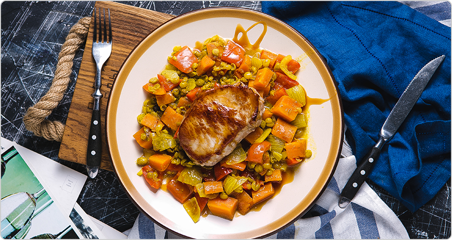
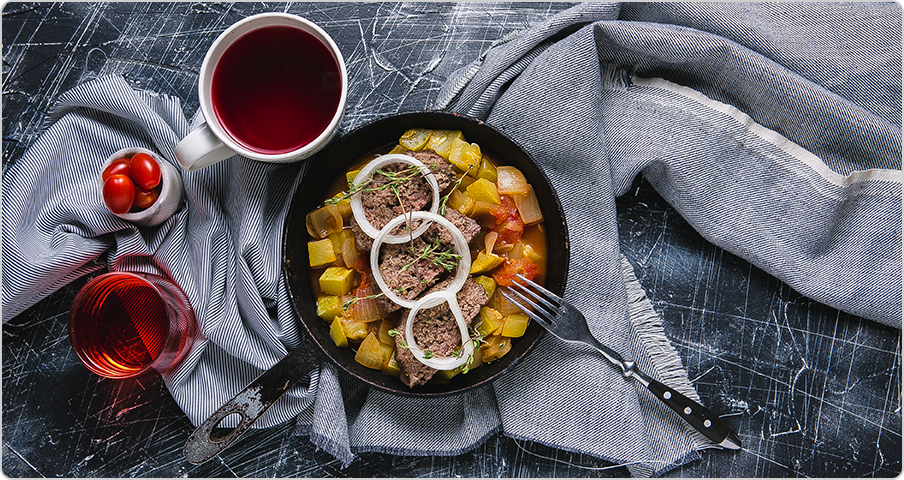
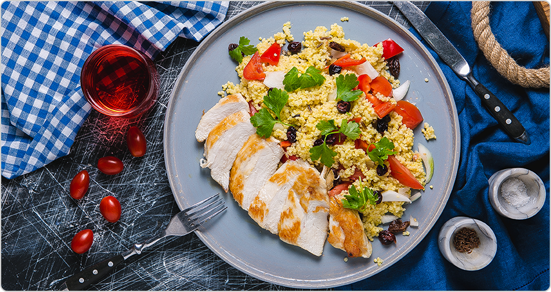
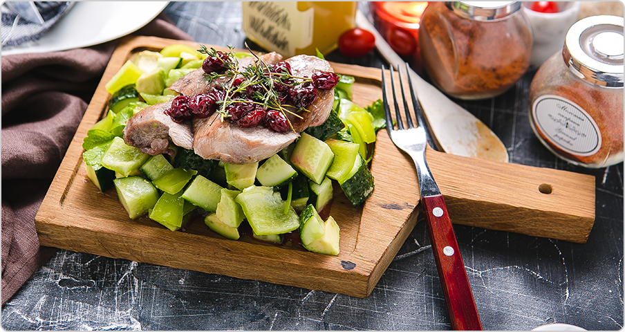
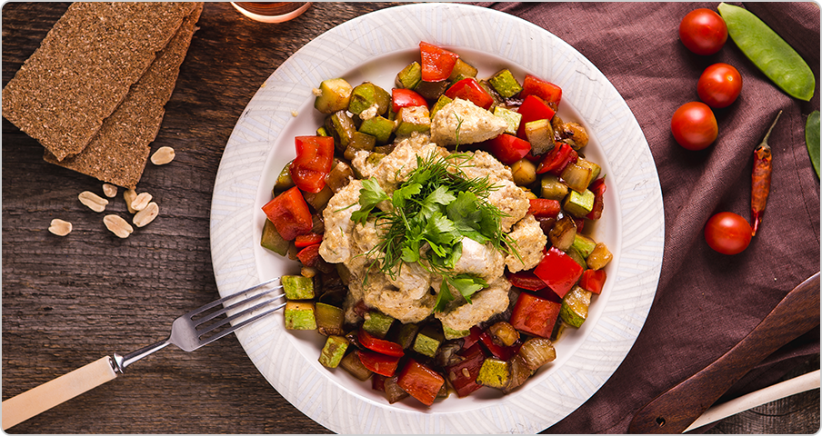

Куриный шницель, маринованный в соусе
терияки, с кунжутной корочкой и салатом

Индейка в медово-чесночном маринаде
с манговым соусом и рисом

Кюфта из рубленой говядины с восточным
соусом и свежими овощами
Пряные куриные крылышки с рисом
и овощами

Пряные куриные крылышки с рисом
и овощами

Black тальятелле с колбасками пекорино,
свежей зеленью и печеными овощами